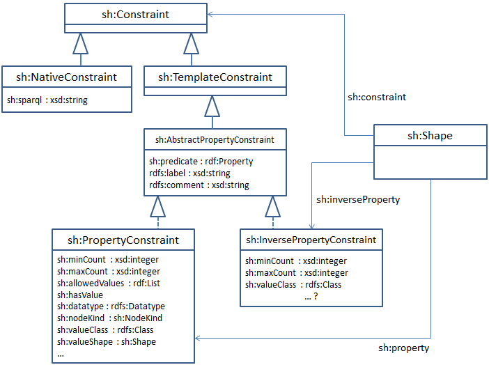
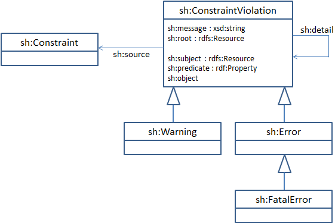

SHACL (Shapes Constraint Language) is an RDF vocabulary for describing RDF graph structures.
Some of these graph structures are captured as "shapes", which group together constraints about the same RDF nodes.
Shapes provide a high-level vocabulary to identify predicates and their associated cardinalities, datatypes and other constraints.
Additional constraints can be associated with shapes using SPARQL and similar executable languages.
These executable languages can also be used to define new high-level vocabulary terms.
SHACL shapes can be used to communicate data structures associated with some process or interface, generate or validate data, or drive user interfaces.
This document defines the SHACL RDF vocabulary together with its underlying semantics.
Revision History
The detailed list of changes and their diffs can be found in the Git repository.
2015-07-17: Rewritten scope and filter mechanism (ISSUE-62),
suggestion for generalized execution language interface (ISSUE-60)
2015-07-13: Replaced Appendix with references to SHACL-REF document
2015-07-03: Editorial fixes, started revision history
Introduction
SHACL (Shapes Constraint Language) is an RDF vocabulary to formulate structural constraints on RDF graphs.
The SHACL vocabulary includes high-level concepts to represent restrictions on predicates used in triples.
These restrictions can be grouped into "shapes".
Shapes can be used to restrict the number of property values and the permitted value types as well as other conditions.
Some users and implementors will be content with using the high-level shapes language only, which is called the SHACL Core Profile
and is described in sections 2 to 6 of this document.
For more complex use cases, SHACL also includes facilities to express other restrictions in an executable language such as SPARQL and, possibly, other languages such as JavaScript.
SHACL includes macro facilities that encapsulate reusable building blocks based on these executable languages into templates and functions.
These advanced topics are covered from section 7 onwards.
SHACL definitions are represented in RDF and can be serialized in multiple RDF formats.
The example snippets in this document use Turtle [[turtle]] and (not written yet:) JSON-LD [[json-ld]] notation.
The reader should be familiar with basic RDF concepts [[rdf11-concepts]] such as triples and (for the advanced concepts of SHACL) with SPARQL [[sparql11-overview]].
Document Outline
Unless otherwise noted in the section heading, all sections and appendices in this document are normative.
TODO: We still need to mark non-normative sections.
The remaining sub-sections of the Introduction provide an overview of the complete language and introduces relevant terminology.
The sections 2 - 6 cover the SHACL Core Profile and may be read independently from the later sections.
We could add details on every section here, but I am not sure this is really needed.
The sections 7 onwards are about the full SHACL language and its formal definition.
The appendix includes SPARQL-related implementation details.
The companion specification SHACL Vocabulary Reference provides additional normative definitions and details.
Overview and Terminology of Core Features
The following example illustrates the use of SHACL to define constraints on issues in a hypothetical bug tracking system.
In the example scenario, the RDFS class ex:Issue is used to represent issues, and the class schema:Person represents users.
Each ex:Issue must point to exactly one user via the property ex:submittedBy and may have one value for ex:assignedTo.
Users that have submitted an issue must also have a schema:email address, so that they can be notified when the issue has been updated.
ex:Issue
a sh:ShapeClass ;
sh:property [
sh:predicate ex:assignedTo ;
rdfs:label "assigned to" ;
rdfs:comment "The assignee of an issue must be a person." ;
sh:maxCount 1 ;
sh:valueClass schema:Person ;
] ;
sh:property [
sh:predicate ex:submittedBy ;
rdfs:label "submitted by" ;
rdfs:comment "The submitter of an issue must be a person who also has an email address." ;
sh:minCount 1 ;
sh:maxCount 1 ;
sh:valueClass schema:Person ;
sh:valueShape ex:SubmitterShape ;
] .
ex:SubmitterShape
a sh:Shape ;
rdfs:comment "A submitter must have at least one email address." ;
sh:property [
sh:predicate schema:email ;
sh:minCount 1 ;
] .
The basic building blocks of SHACL are constraints.
Each constraint defines a condition that can be validated against a graph.
When constraints are validated, they can access a specific node in the graph, called the focus node.
A shape describes a group of constraints with the same focus node.
Many of these constraints are about a certain property only, and these are called property constraints.
Constraints are evaluated against a given focus node, which serves as starting point of property paths and other graph traversal algorithms.
In the current draft, the IRIs of classes (such as ex:Issue above) may also be used as shapes.
Such shape classes may be arranged in a specialization hierarchy, allowing some shapes to further narrow down the constraints from other shapes.
In the Issue example above, the shape ex:Issue includes two constraints.
These constraints are here represented as blank nodes via sh:property.
Each of these constraints specifies the restricted property via sh:predicate, and one or more constraint properties such as sh:minCount and sh:valueClass.
The property sh:valueShape points to another sh:Shape that defines additional constraints that the values of
the ex:submittedBy property must fulfill, in addition to being instances of schema:Person.
One of the operations that SHACL engines should support validates that a given RDF node matches a given shape.
This operation can be invoked based on any control logic, i.e. applications can pick their own mapping between RDF nodes and their shapes.
Another supported operation is to validate all nodes in a given graph.
In order to support that operation, SHACL has the concept of scopes.
Scopes are attached to shapes and produce a collection of nodes that shall be validated against the shape.
SHACL provides several scoping mechanisms, including node selection based on sh:nodeShape and rdf:type triples,
as well as a more general scoping framework that produces focus nodes based on an executable language such as SPARQL.
The scope of a shape can be narrowed down via filter shapes that define pre-conditions that all focus nodes need to fulfill before they are evaluated.
The output of constraint validation is a set of constraint violations.
The following example code defines two instances of the class ex:Issue.
When constraint validation is started, a SHACL engine may follow the rdf:type link of these instances to determine which shapes need to be used.
(If ex:Issue were not a class but a sh:Shape, then the property sh:nodeShape would have been used instead).
The first instance passes validation without producing any violations.
The second instance produces an sh:Error, because its value for ex:submittedBy does not have an schema:email.
ex:ValidExampleIssue
a ex:Issue ;
ex:assignedTo ex:UserWithoutEmail ;
ex:submittedBy ex:UserWithEmail .
ex:InvalidExampleIssue
a ex:Issue ;
ex:submittedBy ex:UserWithoutEmail .
ex:UserWithoutEmail
a schema:Person .
ex:UserWithEmail
a schema:Person ;
schema:email "someone@example.org" .
When this instance data is validated, a SHACL engine will produce the following constraint violations:
[
a sh:Error ;
sh:root ex:InvalidExampleIssue ;
sh:subject ex:InvalidExampleIssue ;
sh:predicate ex:submittedBy ;
sh:object ex:UserWithoutEmail ;
sh:message "Value does not have the shape ex:SubmitterShape." ;
]
Overview and Terminology of Advanced Features
The following paragraphs give an overview of the advanced features of SHACL.
Readers only interested in the Core Profile may skip this section.
The validation of each constraint is formalized with one or more execution languages.
This version of SHACL supports SPARQL as an execution language, but other languages may be supported in future versions or by other communities.
Each constraint needs to be backed by at least one executable body in SPARQL, and any alternative bodies need to follow the same semantics as the SPARQL queries.
Constraints may either directly define such an executable body or point to a template.
Constraints that directly include an executable body are called native constraints.
A template serves as a parameterizable macro that wraps an executable body.
Constraints that rely on a template are called template constraints.
The SHACL vocabulary includes a small library of such templates for common constraint patterns, but anyone can add their own template libraries.
Similar to constraint templates, SHACL also supports scope templates that define a high-level vocabulary to represent scopes.
Templates can be grouped into so-called profiles.
Some SHACL engines may decide to only support certain profiles and implement them differently than the provided (SPARQL) bodies.
The following example illustrates the use of a native SPARQL constraint,
to specify that there cannot be two resources with the same schema:email.
Note that each result set row produced by the SELECT clause of the SPARQL query creates one constraint violation.
ex:UniqueEmailShape
a sh:Shape ;
sh:constraint [
sh:message "There cannot be two resources with the same email address." ;
sh:predicate schema:email ;
sh:sparql """
SELECT ?this (?this AS ?subject) (?email AS ?object)
WHERE {
?this schema:email ?email .
?other schema:email ?email .
FILTER (?this != ?other) .
}
"""
] .
Namespaces
The SHACL system vocabulary is available as a SHACL Turtle File.
Currently contains slight differences from this spec.
Within this document, the following namespace prefix bindings are used:
Prefix
Namespace
rdf:
http://www.w3.org/1999/02/22-rdf-syntax-ns#
rdfs:
http://www.w3.org/2000/01/rdf-schema#
sh:
http://www.w3.org/ns/shacl#
xsd:
http://www.w3.org/2001/XMLSchema#
ex:
http://example.com/ns#
schema:
http://schema.org/
Shapes
There is no agreement in the WG on the relationship of sh:Shape with RDFS classes.
Proposals include:
Keep them completely separate, users only instantiate sh:Shape and use sh:extends
Have rdfs:Class rdfs:subClassOf sh:Shape, use rdfs:subClassOf
Have sh:Shape rdfs:subClassOf rdfs:Class, use rdfs:subClassOf
Allow both approaches in parallel: either rdfs:Class/subClassOf or sh:Shape/extends
Allow both and have sh:classShape or sh:classScope or sh:scopeClass to point from a class to its shapes (or vice versa)
In the absence of such an agreement, this document uses sh:Shape in most examples but allows
classes to be also shapes, with the class sh:ShapeClass as syntactic sugar.
A Constraint defines restrictions on the structure of an RDF graph.
A Shape is a group of constraints that have the same focus nodes.
For example, a shape can be used to state that all instances of a class must have a certain number of values for a given property.
In that example, the instances of the class are the focus nodes, and the restriction on property values is expressed via a constraint.
In the SHACL RDF vocabulary, Shapes are instances of the class sh:Shape.
Shape Labels and Comments
Like many other types of RDF resources, shapes SHOULD have human-readable labels via rdfs:label.
The property rdfs:comment is recommended for documentation and definition purposes.
Shapes and Classes
Shapes can be linked to RDFS classes via the property sh:scopeClass.
The interpretation of this is that the sh:Shape is expected to apply to all instances of these linked classes,
i.e. any resource that has the sh:scopeClass or one of its subclasses as its rdf:type.
If a sh:Shape is also an instance of rdfs:Class then the interpretation is that all instances of the class are expected to have the shape.
There is a built-in subclass of sh:Shape called sh:ShapeClass that is also a subclass of rdfs:Class to simplify the declaration of shapes that are also classes.
A consequence of these links between shapes and classes is that shape declarations can specialize the shapes associated with the superclasses, declared via rdfs:subClassOf.
The following figure illustrates some relationships between core classes of SHACL and RDF Schema.
Note that the use of a UML-like notation does not imply that these RDF concepts are classes in an object-oriented sense.
Illustration of some relationships between classes of SHACL and RDF Schema
Shape Constraints
A shape can be regarded as a collection of constraints on the same focus node.
These constraints can be grouped into three categories that are covered by subsequent sections.
Property Constraints specify characteristics of a given property in the context of the Shape.
The properties sh:property and sh:inverseProperty are used to link a Shape with its property constraints.
The SHACL Core Profile includes other shape-based constraints:
Logical operations including not, and, or and xor,
and Closed Shapes that cannot have any other property than those explicitly enumerated for a shape.
For complex use cases that cannot be handled by the SHACL Core Profile,
General Constraints may define constraints that are not related to only a single property.
The property sh:constraint is used to link a Shape with its general constraints.
Orthogonal to these constraint types, SHACL has a notion of filter shapes that can be used to define pre-conditions
that must hold before a constraint is applied to a given focus node.

Illustration of some core SHACL constraint classes
Property Constraints
In many cases, the constraints attached to a shape can be attributed to a given property of the focus nodes.
Depending on the direction of triple traversal, SHACL defines two properties to associate a shape with such property-related constraints:
sh:property is used to link a shape with property constraints (on the objects of triples)
sh:inverseProperty is used to link a shape with inverse property constraints (on the subjects of triples)
The following sections describe the role of each of these properties in detail.
Note that this section only includes textual definitions of the semantics of those properties.
An alternative formal definition based on SPARQL is provided in an Appendix.
Property Constraints (sh:property)
A property constraint is a constraint that defines restrictions on the values of a given property in the context of the focus node.
Here, the focus node is the subject and the property is the predicate of relevant triples.
The property sh:property can be used to link a shape with its property constraints.
In the SHACL RDF vocabulary, property constraints are instances of the class sh:PropertyConstraint.
When used as values of sh:property, property constraints represented as blank nodes do not require an rdf:type triple.
Note that sh:property may also have values that are sub-classes of sh:PropertyConstraint,
but in this case the rdf:type triple is required.
It is not valid to use sh:property for constraints that are not instance of sh:PropertyConstraint.
The following examples illustrate two ways of using property constraints.
The first example uses a blank node:
ex:InlinePropertyConstraintExampleShape
a sh:Shape ;
sh:property [
sh:predicate ex:someProperty ;
sh:minCount 1 ;
sh:valueClass ex:SomeClass ;
rdfs:label "some property" ;
rdfs:comment "Description of the role of ex:someProperty (in the context of the constraint)" ;
] .
The second example defines a constraint as an IRI node, allowing it to be more easily referenced and shared across multiple shapes:
Property constraints may have an rdfs:label to provide a human-readable label for the property in the context where it appears.
If present, tools SHOULD prefer those locally defined labels over globally defined labels at the rdf:Property itself.
Similarly, property constraints may have an rdfs:comment to provide a description of the property in the given context.
Both rdfs:label and rdfs:comment may have multiple values, but SHOULD only have one value per language tag.
Property constraints may have a single value for sh:defaultValue.
The default value does not have fixed semantics in SHACL, but may be used by user interface tools to pre-populate input widgets.
The value type of the sh:defaultValue SHOULD align with the specified sh:datatype or sh:valueClass of the same constraint.
The following sections provide details on the properties that may be used with sh:PropertyConstraint.
Note that the textual definitions of those properties refers to the Constraint Violations Vocabulary
introduced in a later section.
The property sh:allowedValues can be used to specify that all values of the given predicate
at the focus node must be members of a given set of allowed values.
The set of allowed values is assumed to be an exhaustive enumeration of all possible values.
Property
Value Type
Summary
sh:allowedValues
rdf:List
Enumeration of allowed values
TEXTUAL DEFINITION
The values of sh:allowedValues must be well-formed instances of rdf:List.
The members of that rdf:List must not be blank nodes.
An sh:Error must be reported for every triple that has the focus node as its subject,
the sh:predicate as its predicate and an object that is not a member of the given list.
Matching of literals needs to be exact, e.g. "04"^^xsd:byte does not match "4"^^xsd:integer.
Each produced sh:Error must have the focus node as its sh:root and sh:subject,
the sh:predicate as its sh:predicate and the respective invalid value as its sh:object.
The property sh:datatype can be used to restrict the datatype of all values of the given property.
The values of sh:datatype must be instances of the class rdfs:Datatype, such as xsd:string.
Property
Value Type
Summary
sh:datatype
rdfs:Datatype
Datatype of all values (e.g., xsd:integer)
TEXTUAL DEFINITION
An sh:Error must be reported for each triple that has
the focus node as its subject, the sh:predicate
as its predicate and where the object is not a literal, or is a literal with a mismatching datatype.
A literal matches a datatype if the literal's datatype has the same IRI,
or if its datatype is rdf:langLiteral and the expected datatype is xsd:string.
Each produced sh:Error must have the focus node as its sh:root and sh:subject,
the sh:predicate as its sh:predicate and the respective violating value as its sh:object.
ex:DatatypeExampleShape
a sh:Shape ;
sh:property [
sh:predicate ex:someProperty ;
sh:datatype xsd:string ;
] .
ex:DatatypeShapeExampleValidResource
ex:someProperty "Some value" ;
ex:someProperty "Value with language tag"@en .
ex:DatatypeShapeExampleInvalidResource
ex:someProperty 42 .
sh:directValueType
The property sh:directValueType can be used to restrict the rdf:type of all values of the given property.
The values of sh:directValueType must be RDFS classes (instances of rdfs:Class).
The main difference with sh:valueClass is that sh:directValueType does not include subclasses of the type.
Property
Value Type
Summary
sh:directValueType
rdfs:Class
Type of all values
TEXTUAL DEFINITION
An sh:Error must be reported for each triple that has
the focus node as its subject, the sh:predicate
as its predicate and where the object does not have an rdf:type triple with the given value type as object.
Each produced sh:Error must have the focus node as its sh:root and sh:subject,
the sh:predicate as its sh:predicate and the respective violating value as its sh:object.
The property sh:hasValue can be used to verify
that the focus node has a given RDF node among the values of the given
predicate.
Property
Value Type
Summary
sh:hasValue
any
A specific required value
TEXTUAL DEFINITION
An sh:Error must be reported if there is no triple that has
the focus node as its subject, the sh:predicate
as its predicate and the sh:hasValue as its object.
Each produced sh:Error must have the focus node as its sh:root and sh:subject,
and the sh:predicate as its sh:predicate.
The properties sh:minCount and sh:maxCount
restrict the number of triples with the focus node
as the subject and the given property as the predicate.
Property
Value Type
Summary
sh:minCount
xsd:integer
The minimum cardinality. Optional. Default value is 0.
sh:maxCount
xsd:integer
The maximum cardinality. Optional. Default interpretation is unlimited.
TEXTUAL DEFINITION
Both sh:minCount and sh:maxCount are optional.
The default value of sh:minCount is 0.
Let ?count be the number of triples that have the focus node as
the subject and the sh:predicate as the predicate.
An sh:Error must be reported in either of the following cases:
If ?count is less than the value of sh:minCount, or
if sh:maxCount is present and ?count is greater than the value of sh:maxCount.
The produced sh:Error must have the focus node as its sh:root and sh:subject,
and the predicate as its sh:predicate.
The property sh:nodeKind can be used to restrict the RDF node kind of all values of the given property.
Property
Value Type
Summary
sh:nodeKind
sh:NodeKind
Node kind (IRI, blank node, or literal) of all values
The values of sh:nodeKind must be instances of the class sh:NodeKind.
The SHACL system vocabulary defines that sh:NodeKind has exactly 3 instances:
sh:BlankNode, sh:IRI and sh:Literal (see also the Appendix).
TEXTUAL DEFINITION
An sh:Error must be reported for each triple that has
the focus node as its subject, the sh:predicate
as its predicate and where the object does not match the given node kind.
Each produced sh:Error must have the focus node as its sh:root and sh:subject,
the sh:predicate as its sh:predicate and the respective violating value as its sh:object.
The property sh:valueClass can be used to restrict the rdf:type of all values of the given property.
The values of sh:valueClass must be RDFS classes (instances of rdfs:Class).
The main difference with sh:directValueType is that sh:valueClass also includes subclasses of the type.
Property
Value Type
Summary
sh:valueClass
rdfs:Class
Type of all values
TEXTUAL DEFINITION
An sh:Error must be reported for each triple that has
the focus node as its subject, the sh:predicate
as its predicate and where the object is either a literal, or is an untyped non-literal, or a non-literal with a mismatching rdf:type.
A non-literal matches a type if its rdf:type is equal to the type or one of its (transitive) subclasses, via rdfs:subClassOf.
Each produced sh:Error must have the focus node as its sh:root and sh:subject,
the sh:predicate as its sh:predicate and the respective violating value as its sh:object.
The property sh:valueShape can be used verify that all values of the given property must match a given shape.
The value type of sh:valueShape is sh:Shape.
If the value shapes are blank nodes, then their rdf:type triple can be omitted.
Property
Value Type
Summary
sh:valueShape
sh:Shape
The required shape of all values
TEXTUAL DEFINITION
An sh:Error must be reported for each triple that has
the focus node as its subject, the sh:predicate
as its predicate and where the object does not match the shape specified by sh:valueShape.
Each produced sh:Error must have the focus node as its sh:root and sh:subject,
the sh:predicate as its sh:predicate and the respective violating value as its sh:object.
It is not yet decided how to handle recursive shape definitions in sh:valueShape.
In the following example, all values of the property ex:someProperty are supposed to match the shape
specified by a blank node that ensures that the property ex:nestedProperty has at least one value.
TODO: This section is quite similar to the one about sh:property, only in the inverse direction.
Before writing all this down, we'd rather wait until the forward direction has stabilized.
A quick example should suffice for now:
ex:InversePropertyConstraintExampleShape
a sh:Shape ;
sh:inverseProperty [
sh:predicate ex:someProperty ; # e.g. "child"
sh:minCount 1 ;
rdfs:label "is someProperty of" ; # e.g. "parent"
] .
TODO: Possibly use sh:inversePredicate instead of sh:predicate.
Other Core Constraints on Shapes
While the previous sections have introduced constraints that focused on a single property within a shape,
this section introduces other constraint types that can be used with shapes.
sh:NotConstraint
SHACL supports a high-level negation constraint that can be used to verify that the focus node does not match a given shape.
This is comparable to a logical "not" operator.
Property
Value Type
Summary
sh:shape
sh:Shape
The shape to negate
TEXTUAL DEFINITION
An sh:Error must be reported if the focus node produces no error-level
constraint violations for the shape given via sh:shape.
The produced sh:Error must have the focus node as its sh:root.
SHACL supports a high-level syntax for conjunctive constraints that can be used to test whether the focus node matches all out of several shapes.
This is comparable to a logical "and" operator.
Property
Value Type
Summary
sh:shapes
rdf:List (members: sh:Shape)
List of shapes to validate
TEXTUAL DEFINITION
An sh:Error must be reported if the focus node produces error-level
constraint violations for at least one of the shapes in the rdf:Listsh:shapes.
The produced sh:Error must have the focus node as its sh:root.
Evaluation of the shapes in the rdf:List must happen from left to right, and the evaluation must stop as soon as it finds the first error.
The following example illustrates the use of sh:AndConstraint in a shape to verify
that matching nodes have exactly one value of ex:property.
This is achieved via the conjunction of a separate named shape (ex:SuperShape) which defines
the minimum count, and a blank node shape that further constrains the maximum count.
As shown here, sh:AndConstraint can be used to implement a specialization mechanism between shapes.
ex:SuperShape
a sh:Shape ;
sh:property [
sh:predicate ex:property ;
sh:minCount 1 ;
] .
ex:ExampleAndShape
a sh:Shape ;
sh:constraint [
a sh:AndConstraint ;
sh:shapes (
ex:SuperShape
[
sh:property [
sh:predicate ex:property ;
sh:maxCount 1 ;
]
]
)
] .
ex:ValidInstance1
ex:property "One" .
# Invalid: more than one property
ex:InvalidInstance2
ex:property "One" ;
ex:property "Two" .
sh:OrConstraint
SHACL supports a high-level syntax for disjunctive constraints that can be used to test whether the focus node matches at least one out of several shapes.
This is comparable to a logical "or" operator.
Property
Value Type
Summary
sh:shapes
rdf:List (members: sh:Shape)
List of shapes to validate
TEXTUAL DEFINITION
An sh:Error must be reported if the focus node produces error-level
constraint violations against all of the shapes in the rdf:Listsh:shapes.
The produced sh:Error must have the focus node as its sh:root.
Evaluation of the shapes in the rdf:List must happen from left to right, and the evaluation must stop as soon as it finds the first matching shape.
The following example illustrates the use of sh:OrConstraint in a shape to verify
that matching nodes have at least one value of ex:exampleProperty1
or at least one value of ex:exampleProperty2.
SHACL supports a high-level syntax for exclusive-or constraints that can be used to test whether the focus node matches exactly one out of several shapes.
This is comparable to a logical "xor" operator.
Property
Value Type
Summary
sh:shapes
rdf:List (members: sh:Shape)
List of shapes to validate
TEXTUAL DEFINITION
Using all shapes in the rdf:Listsh:shapes, an sh:Error must be reported if the number of
shapes where the focus node produces error-level constraint violations is not equal to 1.
The produced sh:Error must have the focus node as its sh:root.
The following example illustrates the use of sh:XorConstraint in a shape to verify
that matching nodes have either a value for ex:fullName or a combination of
ex:givenName and ex:familyName.
The RDF data model offers a huge amount of flexibility.
Any resource can in principle have values for any property.
However, in some cases it makes sense to restrict which properties can be applied to resources.
The SHACL core language includes a construct called sh:ClosedShape that can be assigned to
a shape via the property sh:constraint to indicate that valid resources must only have
values for those properties that have been explicitly declared via sh:property.
TEXTUAL DEFINITION
An sh:Error must be reported for each triple that has the focus node as its
subject and a predicate that is not explicitly enumerated as a sh:predicate
of the sh:property constraints at the surrounding shape.
The properties rdf:type and sh:nodeShape are excluded from this constraint.
The produced sh:Error must have the focus node as its sh:root,
and the corresponding values of the triple as sh:subject, sh:predicate and sh:object.
The following example illustrates the use of sh:ClosedShape in a shape to verify
that matching nodes only have values for ex:exampleProperty1 and ex:exampleProperty2.
This feature has been proposed but is not an accepted requirement and is fully not worked out yet.
Here is just one possible design, as a placeholder, for now.
Another related tracker item is ISSUE-62.
SHACL includes vocabulary to define scopes, which can be used by a SHACL processor to select which focus nodes need to be validated against which shapes.
The resulting collection of focus nodes can furthermore be narrowed down via so-called filter shapes.
Both concepts are illustrated by the following figure, and introduced in the following sub-sections.
Illustration of the scoping and filtering process
Scopes
SHACL supports three kinds of scopes:
Individual scopes link a specific resource with a shape via sh:nodeShape.
Class-based scopes link all instances of a given class with a shape, using sh:scopeClass and rdf:type.
General scopes define a flexible mechanism to produce arbitrary focus nodes for a given graph.
Individual scopes (sh:nodeShape)
Individual nodes can point to the shapes that they are supposed to be validated against using the property sh:nodeShape.
This pattern is illustrated in the following example.
RDF Schema and OWL provide a well-established framework to model domains in terms of classes and instances.
A lot of existing data is already represented using these languages.
The property sh:scopeClass can be used to link a sh:Shape with an rdfs:Class.
The property rdf:type is used to determine which shapes a given node are expected to fulfill.
The scope includes all instances of the sh:scopeClass and its subclasses, by following rdfs:subClassOf triples.
(TODO: specify whether these subClassOf triples are expected to be in the query graph and/or the shapes graph.)
This pattern is illustrated in the following example.
ex:ExampleClass
a rdfs:Class .
ex:ExampleShape
a sh:Shape ;
sh:scopeClass ex:ExampleClass ;
sh:constraint [
...
] .
ex:ExampleInstance
rdf:type ex:ExampleClass .
If the type class of an instance is also an instance of sh:Shape then the sh:scopeClass triple can be omitted and rdf:type may directly link a resource with its shapes.
In this scope, the IRIs of classes double as shape definitions, i.e. it is possible to directly attach constraints at the IRI of a class.
As syntactic sugar, the metaclass sh:ShapeClass can be used as a combination of rdfs:Class and sh:Shape.
This pattern is illustrated in the following example.
ex:ExampleClassAndShape
a rdfs:Class ; # These two triples can be simplified via sh:ShapeClass
a sh:Shape ;
sh:constraint [
...
] .
ex:ExampleInstance
rdf:type ex:ExampleClass .
General scopes (sh:scope)
SHACL includes a generic mechanism to select focus nodes.
A sh:Shape can point to one or more instances of sh:Scope.
The core profile of SHACL includes several subclasses of sh:Scope that define a high-level vocabulary for common scope patterns.
The full SHACL language also includes a generic mechanism based on executable languages such as SPARQL, elaborated in an advanced section.
Property scopes (sh:PropertyScope)
The scope class sh:PropertyScope selects all subjects that have at least one value for a given property sh:predicate.
The following example uses sh:AllSubjectsScope to define a constraint that shall apply to all subjects in the current graph:
ex:PropertyScopeExampleShape
a sh:Shape ;
sh:scope [
a sh:AllSubjectsScope ;
] ;
sh:constraint [
...
] .
Filter Shapes
In some cases, constraints or shapes should not apply to all focus nodes, produced by a scope.
For example, instances of the given class ex:Person that were ex:bornIn
the country ex:USA may have a different legal drinking age than others.
In order to support such use cases, SHACL includes the concept of filter shapes that act as pre-conditions that all focus nodes need to fulfill before they are being validated.
Formally, filter shapes eliminate entries from the collection of focus nodes selected by a shape's scopes, if the focus node produces an error-level constraint violation for the given filter shapes.
The following example states that the sh:minCount constraint only applies to resources that have a certain value for ex:requiredProperty.
Alternatively, sh:filterShape can be attached to a whole shape, with the meaning
that the filter applies to all constraints attached to the shape, as shown in the following example.
The output of a SHACL constraint validation operation is a set of constraint violations.
SHACL includes an RDF vocabulary to represent such constraint violations together with
structural information that may provide guidance on how to fix the violation, as well as
human-readable messages.
The following code snippet represents a valid constraint violation that may have been produced
by a constraint validation engine:
A constraint violation is represented by a IRI or blank node that has exactly one
asserted rdf:type.
The rdf:type arc of a constraint violation must point to one of the subclasses
of the ("abstract") base class sh:ConstraintViolation.
The SHACL system vocabulary includes the following constraint violation types:
Constraint Violation Class
Superclass
Description
sh:Warning
sh:ConstraintViolation
A non-critical constraint violation indicating a warning.
sh:Error
sh:ConstraintViolation
A constraint violation indicating an error.
sh:FatalError
sh:Error
An error that cannot be recovered and further evaluation may terminate immediately.
Engines may decide to validate potentially fatal constraints first.

Illustration of the SHACL constraint violations metamodel
SHACL extensions may define additional violation types, as long as they are rooted in
sh:ConstraintViolation.
The rdfs:subClassOf relationship between these types indicates specialization,
e.g. sh:FatalError is a subclass of sh:Error meaning that every
fatal error should also be regarded as an error.
Structural Violation Metadata
SHACL constraint violations may include machine-readable metadata that points at
the cause of the violation.
sh:root
Constraint violations may have a single value for the property sh:root to point to an
IRI or blank node that has caused the violation.
If the violation has been produced by a shape constraint, then the sh:root is usually the focus node.
sh:subject, sh:predicate and sh:object
Constraint violations are often caused by a single RDF triple, or a predicate in the context of a given subject or object.
This information can be encoded via the properties sh:subject, sh:predicate and sh:object,
each of which can have at most one value.
sh:predicate can only be present if either sh:subject or sh:object have also been specified.
If sh:object is unspecified, then the interpretation is that the error is caused by the subject/predicate combination.
If sh:subject is unspecified, then the interpretation is that the error is caused by the object/predicate combination.
sh:source
Constraint violations may point at one sh:Constraint that has caused
the violation, specified via the property sh:source.
sh:detail
The property sh:detail may link a (parent) constraint violation with one or more other
(child) constraint violations that provide further details about the cause of the (parent) violation.
Depending on the capabilities of the constraint validation engine, this may include failures of
nested constraints that have been evaluated via sh:valueShape.
Human-readable Violation Messages (sh:message)
Constraint violations may have values for the property sh:message to communicate
additional textual details to humans.
While sh:message may have multiple values, there SHOULD not be two values with the same language tag.
General Shape Constraints (sh:constraint)
Note that the subsequent sections cover features of SHACL that go beyond the SHACL Core Profile.
The property sh:constraint provides the most general mechanism to associate a constraint with a shape.
The values of this property must be constraints, i.e. they MAY reference a focus node.
Note that the property sh:property SHOULD be used instead of sh:constraint if the constraint is a sh:PropertyConstraint.
The property sh:inverseProperty SHOULD be used instead of sh:constraint if the constraint is a sh:InversePropertyConstraint.
SHACL supports two types of general shape constraints:
General shape constraints based on a high-level vocabulary (template)
General shape constraints based on a native executable (such as a SPARQL query)
The following example assumes that there is a high-level template called myt:DisjointPropertiesConstraint that takes two arguments
myt:property1 and myt:property2.
The intent of that example is to state that the values of the properties ex:father and ex:mother must be disjoint.
The following example illustrates the definition of a constraint based on a SPARQL query.
The property sh:sparql is used to point at a SELECT query as explained in a later section.
Note that the variable ?this is used to reference the focus node.
ex:GeneralSPARQLConstraintExampleShape
a sh:Shape ;
sh:constraint [
sh:message "The value of property2 cannot be smaller than the value of property1." ;
sh:predicate ex:property2 ;
sh:sparql """
SELECT ?this (?this AS ?subject) (?value2 AS ?object)
WHERE {
?this ex:property1 ?value1 .
?this ex:property2 ?value2 .
FILTER (?value2 < ?value1) .
}
""" ;
] .
In the example above, SPARQL is provided as the only native executable.
However, additional executables such as JavaScript may be provided based on other sets of properties like ex:javaScript.
Graph-level ("global") Constraints
In some cases, constraints are not naturally associated with individual focus nodes, but need to be enforced upon a whole graph.
The following example illustrates one way of representing such conditions, by associating a shape with the graph resource itself, via sh:nodeShape.
The constraint expresses that the graph must contain at least one instance of a given class.
Note that the constraint itself does not reference the focus node?this at all.
<http://example.org/exampleGraph>
a rdfs:Resource ; # TODO: better would be sh:Graph if that's approved
sh:nodeShape [
sh:constraint [
sh:message "There needs to be at least one instance of ex:SomeClass." ;
sh:sparql """
SELECT (ex:SomeClass AS ?root)
WHERE {
FILTER NOT EXISTS { ?any rdf:type ex:SomeClass } .
} """
]
] .
Templates
Templates can be used to encapsulate and parameterize executable bodies based on arguments.
Constraint templates can be instantiated anywhere where a native constraint may appear (for example, at sh:constraint).
Scope templates can be instantiated anywhere where a native scope may appear, at sh:scope.
SHACL includes several templates that were deemed to be of general use, including the property constraint templates.
Such templates form a high-level vocabulary that may be directly interpreted ("hard-coded") without reliance on their executable bodies.
Constraint templates are represented as IRI nodes that are instances of the class sh:ConstraintTemplate.
Scope templates are represented as IRI nodes that are instances of the class sh:ScopeTemplate.
SHACL also includes a more general superclass sh:Template that may be used for other kinds of templates (rules, stored queries etc).
Well-defined, non-abstract templates MUST provide at least one executable body property using sh:sparql.
The following example illustrates the definition of a constraint template based on a SPARQL query.
ex:ExampleTemplate
a sh:ConstraintTemplate ;
rdfs:label "Example Template" ;
rdfs:comment "Verifies that the given focus node (?this) has at least one value for the argument property (?argProperty)." ;
sh:argument [
sh:predicate ex:argProperty ;
sh:valueClass rdf:Property ;
] ;
sh:labelTemplate "The property {?argProperty} must have at least one value" ;
sh:sparql """
SELECT ?this (?this AS ?subject) (?argProperty AS ?predicate)
WHERE {
FILTER NOT EXISTS { ?this ?argProperty ?anyValue }
}
""" .
The following sections introduce details of the properties that such templates may have.
Template Arguments
The arguments of a template are attached via the property sh:argument.
Each argument must be an instance of sh:Argument.
The rdf:type triple of the argument can be omitted if it is a blank node with an incoming sh:argument triple.
Each sh:Argument MUST have exactly one value for the property sh:predicate.
The values of sh:predicate must be IRIs.
The local name of a IRI is defined as the longest NCNAME
at the end of the IRI, not immediately preceeded by the first colon in the IRI.
The local names of the values of sh:predicate must match the following conditions (to ensure a correct mapping from arguments into SPARQL variables is possible):
There must not be any other declared sh:Argument for the same template (and its transitive superclasses) that has a sh:predicate with the same local name
An sh:Argument may have its property sh:optional set to true
to indicate that the argument is not mandatory.
An sh:Argument may declare a default value via sh:defaultValue.
For non-optional arguments, the engine must use the declared default value for template instances that do not define a value for this argument.
An sh:Argument may declare one value for the property sh:valueClass or one value for
sh:datatype, similar to their counterparts in property constraints.
This can be used to communicate the expected value type of the argument in template instances.
Some implementations MAY use this information to prevent the execution of a template with invalid arguments, and to signal errors.
sh:labelTemplate
The property sh:labelTemplate can be used to suggest how instances of the template shall be rendered to humans.
The sh:labelTemplate must be a string that can reference the arguments using the syntax {?varName},
where varName is the name of the SPARQL variable that corresponds to the argument.
These {?...} blocks SHOULD be substituted with the actual values used in the template instance.
General Scopes (sh:scope)
In addition to the scope classes introduced in the core section, such as sh:PropertyScope,
SHACL provides facilities for anyone to define custom scopes.
Scopes may either have a native executable body or be an instance of sh:TemplateScope.
All this is analogous to how constraints work, but with the additional restrictions:
All subjects of sh:scope triples must be IRIs
The arguments of a scope template must not be blank nodes
TODO: Maybe include an example of a user-defined scope template and how it is used.
Profiles
A Profile is a set of templates.
Profiles can be used to define controlled sub-dialects of SHACL, e.g. with desirable complexity.
Tools may decide to only support certain profiles, for example so that they can hard-code and optimize certain algorithms.
Since Profiles are entirely based on templates, native constraints and scopes such as those in SPARQL are outside of their expressivity.
The class sh:Profile is used to represent SHACL profiles.
The properties sh:constraintTemplate and sh:scopeTemplate link a sh:Profile with the templates that are in the profile.
The following example defines a profile consisting of the two SHACL templates for min/max cardinality and value shape,
as well as their shared superclass (which defines the sh:predicate property) and their shared subclass
sh:PropertyConstraint that is directly instantiated.
In the example above, the profile includes only the properties from the enumerated template classes.
Sibling template classes such as sh:AbstractAllowedValuesPropertyConstraint are outside of the profile,
which means that sh:allowedValues would be out of scope for this profile.
Profiles can extend each other using the property sh:extends.
Such profiles include all templates from the profiles that they (transitively) extend.
Supported Operations
This section enumerates the basic operations that complete SHACL engines SHOULD support.
The specification does not prescribe how these operations are exposed to the user of a SHACL system.
The following table provides an overview of the operations and how they depend on each other.
All operations produce constraint violations.
For the sake of this specification, we assume that the constraint violations are represented as instances of
sh:ConstraintViolation that are added to a result graph that is known
to each operation for the duration of its execution.
Actual implementations may use different data structures and result formats and input and output to these operations.
All operations have an implicit argument, which is a data set with a default named graph.
Details of this need to be fleshed out, pending design decisions on general graph management.
The SHACL specification supports an open architecture consisting of Execution Languages
that serve as work-horses of the individual constraints.
The constraint validation operations rely on functions provided by these execution languages.
validateConstraint
This operation evaluates a single constraint and produces constraint violations.
Argument
Type
Description
?constraint
sh:Constraint
The constraint to evaluate
?shape
sh:Shape
The shape containing the constraint
?focusNode
rdfs:Resource
The focus node
This operation assumes that the ?constraint is either a native constraint
or a template constraint.
For template constraints, the algorithm will execute the constraint template itself plus all of its superclasses.
if (?constraint instanceOf sh:NativeConstraint)
let el := an execution language where el.canExecuteConstraint(?constraint) = true
el.executeConstraint(?constraint, null, ?shape, ?focusNode)
else
forEach ?template := (?constraint rdf:type ?type . ?type rdfs:subClassOf* ?template)
let el := an execution language where el.canExecuteConstraint(?constraint, ?template) = true
el.executeConstraint(?constraint, ?template, ?shape, ?focusNode)
validateNodeAgainstShape
This operation validates a single node against all constraints associated with a given shape.
Argument
Type
Description
?focusNode
rdfs:Resource
The focus node to validate
?shape
sh:Shape
The shape that has the constraints.
?minSeverity
rdfs:Class
The minimum severity class, e.g. sh:Error specifying which constraints to exclude/include.
Algorithm in pseudo-code:
if (validateNode(?focusNode, ?filterShape, sh:Error) produces the empty set for all declared sh:filterShapes of ?shape)
forEach ?constraint := (?shape sh:constraint|sh:property|sh:inverseProperty|sh:argument ?constraint)
if (declared sh:severity of ?constraint is at least ?minSeverity)
if (validateNode(?focusNode, ?filterShape, sh:Error) produces the empty set for all declared sh:filterShapes of ?constraint)
validateConstraint(?constraint, ?shape, ?focusNode)
validateNode
This operation validates a single node against all shapes associated with it, based on in-graph mappings.
Argument
Type
Description
?focusNode
rdfs:Resource
The focus node to validate
?minSeverity
rdfs:Class
The minimum severity class, e.g. sh:Error specifying which constraints to exclude/include.
where the helper function getShapes produces a set of shapes as follows:
forEach ?shape := (?focusNode sh:nodeShape ?shape)
add(?shape)
forEach ?type := (?focusNode rdf:type/rdfs:subClassOf* ?type)
if (?type instanceof sh:Shape)
add(?type)
forEach ?shape := (?shape sh:scopeClass ?type)
add(?shape)
forEach ?shape, ?scope := (?shape sh:scope ?scope)
let el := an execution language where el.canExecuteScope(?scope) = true
if (el.isNodeInScope(?scope, ?focusNode)
add(?shape)
validateGraph
This operation validates a whole graph against all shapes associated with its resources, based on in-graph scopes.
?minSeverity
rdfs:Class
The minimum severity class, e.g. sh:Error specifying which constraints to exclude/include.
Algorithm in pseudo-code (note that the algorithm as written here would be hopelessly inefficient if implemented literally - actual implementations can select shapes and their scopes together and then call validateNodeAgainstShape much more efficiently):
where the helper function collectNodes produces a set of focus nodes as follows:
forEach ?focusNode := (?focusNode sh:nodeShape ?anyShape)
add(?focusNode)
forEach ?focusNode := (?focusNode rdf:type ?anyClass) where ?anyClass instanceOf sh:Shape
add(?focusNode)
forEach ?focusNode := (?focusNode rdf:type ?anyClass) where exists (?anyShape sh:scopeClass ?anyClass)
add(?focusNode)
forEach ?scope := (?shape sh:scope ?scope)
let el := an execution language where el.canExecuteScope(?scope) = true
forEach ?focusNode := el.executeScope(?scope)
add(?focusNode)
Execution Languages
The SHACL operations assume a registry of known execution languages, such as SPARQL.
This registry SHOULD include one or more execution languages, implemented via an interface with the following functions.
The SHACL engine must select a suitable execution language from the registry for each constraint, function and scope that it encounters, using the provided can.. functions.
Clarify what needs to happen if no suitable language is found: fail gracefully or fatal error.
This operation tests whether the given execution language can execute a given constraint, returning either true or false.
Argument
Type
Description
?constraint
sh:Constraint
The constraint to execute
?template
sh:ConstraintTemplate
Optional, only given if ?constraint is a template constraint. The template to execute (possibly a super-class of the directly instantiated template).
executeConstraint
This operation executes a given constraint and adds any constraint violations into the current results graph.
Argument
Type
Description
?constraint
sh:Constraint
The constraint to execute
?template
sh:ConstraintTemplate
Optional, only given if ?constraint is a template constraint. The template to execute (possibly a super-class of the directly instantiated template).
?shape
sh:Shape
The shape containing the constraint
?focusNode
rdfs:Resource
The focus node.
Calling this function is only supported if a prior call to canExecuteConstraint has returned true for the same arguments.
canExecuteScope
This operation tests whether the given execution language can execute a given scope, returning either true or false.
Argument
Type
Description
?scope
sh:Scope
The scope to execute (may be a template scope)
executeScope
This operation gets all nodes from a given scope.
Argument
Type
Description
?scope
sh:Scope
The scope (may be a template scope)
isNodeInScope
This operation tests whether a given focus node is within a given scope, returning either true or false.
isNodeInScope must return true for exactly the nodes that are produced by executeScope with the same scope argument.
Argument
Type
Description
?focusNode
rdfs:Resource
The focus node to test
?scope
sh:Scope
The scope to test (may be a template scope)
canExecuteFunction
This operation tests whether the given execution language can execute a given function, returning either true or false.
Argument
Type
Description
?function
sh:Function
The function to execute (must be a IRI).
executeFunction
This operation executes a given function with a list of arguments and returns a result node or an error.
Argument
Type
Description
?function
sh:Function
The function to execute (must be a IRI).
?arg1, ?arg2, ...
RDF node
The arguments.
Functions
SHACL functions define operations that produce an RDF node based on arguments.
Functions can be called within SPARQL queries to encapsulate complex logic of other SPARQL queries, or executable logic in other languages such as JavaScript.
However, the general declaration mechanism for SHACL functions is independent from SPARQL and may also be exploited by other environments.
Functions must be declared as instances of the class sh:Function.
Well-defined, non-abstract functions MUST provide at least one executable body property such as sh:sparql so that one of the registered execution languages return true for canExecutionFunction().
The following example illustrates the definition of a function based on a SPARQL query.
# Example call: ex:exampleFunction(4, 3) returns 7
ex:exampleFunction
a sh:Function ;
rdfs:comment "Computes the sum of its two arguments ?arg1 and ?arg2." ;
sh:returnType xsd:integer ;
sh:argument [
sh:predicate sh:arg1 ;
sh:datatype xsd:integer ;
rdfs:comment "The first operand" ;
] ;
sh:argument [
sh:predicate sh:arg2 ;
sh:datatype xsd:integer ;
rdfs:comment "The second operand" ;
] ;
sh:sparql """
SELECT (?arg1 + ?arg2 AS ?result)
WHERE {
}
""" .
The following sections introduce details of the properties that such functions may have.
Function Arguments
The arguments of a function are attached to its sh:Function via the property sh:argument.
Each argument must be an instance of sh:Argument.
The rdf:type triple of the argument can be omitted if it is a blank node with an incoming sh:argument triple.
Arguments are ordered, corresponding to the notation of function calls in SPARQL such as
ex:exampleFunction(?arg1, ?arg2).
Each sh:Argument MUST have exactly one value for the property sh:predicate.
The values of sh:predicate must be sh:arg1 for the first argument,
sh:arg2 for the second argument, etc.
Arguments are "inherited" from the superclasses of the function.
For example if a superclass already declares sh:arg1 then subclasses may only define sh:arg2 etc.
Each sh:Argument may have its property sh:optional set to true
to indicate that the argument is not mandatory.
If an argument has been declared optional, then all succeeding arguments must also be declared optional.
Similar to Property Constraints, each sh:Argument may declare one value for the property sh:datatype or one value for the property sh:valueClass.
This can be used to communicate the expected value type of the argument in function calls.
Some implementations MAY use this information to prevent the execution of a function with invalid arguments, and to signal errors.
sh:returnType
A function may declare a single return type via sh:returnType.
This information may serve for documentation purposes, only.
However, in some execution languages such as JavaScript, the declared sh:returnType may inform
the engine how to cast a native value into an RDF value type.
sh:cachable
A sh:Function may have a property sh:cachable set to true.
Functions that are marked as cachable MUST always return the same value for the same combination of arguments, regardless of the query graphs.
Engines can use this information to cache and reuse previous function calls without repeatedly evaluating their executable body.
Entailment
By default, SHACL does not assume any entailment regime [[sparql11-entailment]] to be actviated on the graph that is queried.
However, the property sh:entailment can be used to instruct a SHACL engine to ensure that a given entailment is activated.
The values of sh:entailment must be IRIs, with common use cases covered by [[sparql11-entailment]].
The subject of sh:entailment must be the IRI of the shapes graph itself.
If the engine is not capable of supporting the given entailment regime, then it MUST produce a sh:FatalError.
Standard-compliant SHACL implementations are not required to support any entailment regimes.
SPARQL-based Execution (sh:sparql)
The property sh:sparql is used to link constraints, templates and functions with an executable body in SPARQL.
The values of sh:sparql must be string literals that can be parsed into syntactically valid SPARQL queries.
Prior to parsing, a SHACL engine MUST add all prefix declarations from the defining graph into the beginning of the string.
This means that the values of sh:sparql do not have to explicitly state any @prefix declarations for the prefixes used in the SPARQL query.
The SPARQL queries attached to a constraint via sh:sparql must be of the query form SELECT.
Pre-bound Variables in SPARQL Constraints (?this, ?shapesGraph, ?currentShape)
When SPARQL constraints are executed then the engine will pre-bind values for the following variables
with special meaning.
The effect of this pre-binding is that all occurrences of these variables in the top-level query will have the provided
values, similar to inserting a SPARQL VALUES clause into the beginning of the query, but also supporting blank nodes.
We need a suitable formal definition of what pre-binding means - the statement above with VALUES may not be entirely correct.
Variable
Interpretation
?this
The focus node.
?shapesGraph
The named graph containing the Shape definitions (and possibly other data).
Can be used as in GRAPH ?shapesGraph { ... } to query shapes, constraints
and complex arguments such as rdf:Lists.
?currentShape
The currently evaluated shape. Typically used in conjunction with ?shapesGraph.
Mapping of Result Variables to Constraint Violations
Each row of the result set produced by a SELECT query must be converted into one constraint violation blank node.
The properties of those blank nodes are derived by the following rules, through a combination of result variables and by looking at properties attached to the constraint itself.
In the following table, the host resource is assumed to be the constraint or template that has the executed sh:sparql query as one of its properties.
The production rules are meant to be executed from top to bottom, so that the first bound value will be used.
Property
Production Rules
rdf:type
The value of sh:severity of the host resource
sh:Error as default
sh:root
The value of the variable ?root
The value of the variable ?this
The value of sh:root of the host resource
sh:subject
The value of the variable ?subject
sh:predicate
The value of the variable ?predicate
The value of sh:predicate of the host resource
sh:object
The value of the variable ?object
sh:message
The value of the variable ?message
The values of sh:message of the host resource.
These values may reference any variable from the SELECT result variables via {?varName}.
The {?varName} blocks SHOULD be substituted with suitable string representations of the values of said variables.
sh:source
The host resource
The following example illustrates a constraint that flags warnings for all subjects that have a rdfs:label with the language tag "de".
Injecting Annotation Properties into Constraint Violations
It is possible to inject additional annotation properties into the blank nodes created for each row of the SELECT result sets.
Any such property needs to be declared via a value of sh:resultAnnotation at the host node.
The values of sh:resultAnnotation must be IRIs or blank nodes with the following properties:
Property
Value type
Count
Description
sh:annotationProperty
rdf:Property
1 (mandatory)
The annotation property that shall be set
sh:annotationVarName
xsd:string
0..1
The name of the SPARQL variable to take the values from
sh:annotationValue
0..unlimited
Constant nodes that shall be used as values
If a sh:resultAnnotation defines a sh:annotationVarName then the engine must copy the bindings for the given variable into the constructed constraint violations for the same row.
The values of sh:annotationProperty MUST NOT be from the SHACL namespace, to avoid clashes with variables that are already produced by other means.
Here is a slightly complex example, illustrating the use of result annotations.
[
a sh:Error ;
sh:root ex:ExampleRootResource ;
sh:subject ex:ExampleValueResource ;
sh:predicate ex:property2 ;
sh:object ex:ExampleIntermediateResource ;
sh:message "The message." ;
sh:source [ the blank node of the sh:constraint above ] ;
ex:time "2015-03-27T10:58:00"^^xsd:dateTime ; # Example
] .
SPARQL-based Scopes
The SPARQL queries attached to a scope via sh:sparql MUST be of the query form SELECT, or a fragment that produces a valid SELECT query if wrapped by SELECT ?this WHERE { ... }.
The SELECT queries MUST project to the result variable ?this.
The results of execution consists of all distinct bindings for the variable ?this.
The SELECT queries MUST also be executable when converted to an ASK query and with a pre-bound value for ?this.
The set of bindings for ?this that return true for such ASK queries must be identical to the set produced by the SELECT query.
This constraint makes sure that engines can evaluate whether a given shape applies to a given focus node as part of the validateNode operation.
The following example illustrates a well-formed SPARQL-based scope that produces all persons born in the USA:
ex:USCitizenShape
a sh:Shape ;
sh:scope [
sh:sparql """
SELECT ?this
WHERE {
?this a ex:Person .
?this ex:bornIn ex:USA .
}
""" ;
] ;
sh:constraint ...
SPARQL-based Templates
If a sh:Template has a value for sh:sparql, then the corresponding instances need to follow the same execution rules as outlined for SPARQL-based Constraints and SPARQL-based Scopes.
The only difference is that the SPARQL queries need to be executed with additional pre-bound variables, derived from the arguments of the template.
The names of those variables must match the local name of the argument predicates, including the arguments defined by any (transitive) superclasses of the template.
For example, if an argument is represented with the predicate ex:myArgument then the variable ?myArgument must be pre-bound with the value of the argument in the template instance.
SPARQL-based Functions
If a sh:Function has a value for sh:sparql, then a SPARQL-based execution engine SHOULD
execute the provided SPARQL query on the current data set.
In this SPARQL query, the engine needs to pre-bind the variables ?arg1, ?arg2 etc
based on the provided arguments of the function call.
The SPARQL query must be of type ASK or SELECT.
For ASK queries, the function's return value is the result of the ASK query execution.
For SELECT queries, the function's return value is the first binding of the first result variable in the result set.
Some execution engines may ignore the specified sh:sparql query and rely on an alternative (possibly native) implementation instead,
as long as the functions return the same values as the specified sh:sparql query.
This can be used to optimize frequently needed functions.
Some processors may even use the sh:sparql query to rewrite other SPARQL queries via inlining techniques.